1928—The New-Way Course in Millinery and Hat Design
Lesson 5—Wire Frames
Uses of Wires in Millinery
Just as an architect first plans his building, so must the milliner first plan her hat. And when she has her plans she must, like the architect, first build the foundation. The foundations of a great many hats are wire frames.
But it is not only for the making of wire frames that wire plays so important a part in millinery. It is used also for wiring lace and ribbon, for edging buckram frames, for cordings—and for various other purposes. Of course there are different wires for different uses, and the purpose of this lesson is to acquaint you with their names and their characteristics.
For instance, there is Frame wire, which is also known as Brace wire. It is used almost exclusively for the making of hat frames, but is used extensively also for edging buckram frames. One of the very first things you should learn in the matter of millinery wires is using pliers correctly. You should be able to use the pliers with ease, to be able to make a fine, clean cut without tearing the covering of the wire. You should also be deft in catching the end of the wire with the pliers and turning it down at right angles. This is something that cannot be taught; deftness in the use of the pliers comes only with practice.
The heaviest wire used in millinery is called Cable wire. Sometimes it is used for an entire frame, but most frequently it is used solely for wire-edging. Sometimes it is silk-covered and is used as a frame for a transparent hat, and it is sometimes used as a cord on the under side of a brim. Silk-covered Cable wire comes in several different sizes and many shades.
Lace wire is a millinery wire that is finer than Brace wire, and it is used for wiring ribbons, laces and flowers. It has many practical uses, and is sometimes even used for making an entire frame—especially when a particularly light-weight frame for a dainty summer hat is required. The finest wire used in millinery is called Tie Wire. It comes in three colors: black, white and green. It is used for tying other wires in place, and is also used a great deal in making hand-made flowers. This wire is also made uncovered, but this is not entirely satisfactory.
A special wire used for wiring ribbons—either on the edges, through the center, or both—is called Ribbon wire. It is used also for making loops and bows. It comes in various widths and may be had in black or white.
Another millinery wire is called Sprung or Spring wire. It is made of steel and is fitted with a milliner's clasp. As it is not easily bent, it is not used on a shaped hat, but it is used on the edge of straight brims and for the edge of brims of transparent hats.
These are the important millinery wires. Now that you know their names and their uses, suppose we proceed at once with the making of a wire frame and see just what the correct process is.
Methods of Tying Wires
Before you can proceed with the making of a wire frame, you must have all the necessary equipment. You will need brace wire, tie wire and pliers. You will require also a tape line and a yard stick or rule, and if the hat is to be a flat shape or a transparent brim you will need spring wire for the edge.
Brace wire is purchased in coils. Unless properly handled, the coils will become tangled and you will have difficulty with the wire. To open the coil, hold it in the left hand, and with the pliers in the right hand, cut the tie wire which holds the coil together. Then place both hands within the coil and roll them in a circular motion. This will loosen the coil of wire. Thus the individual coils will be separated and the wire will be easily handled.
To cut wire, grasp the pliers firmly in the hand, placing the wire squarely in the jaws of the pliers and bring the jaws firmly together. The wire should be cut square and clean, without any injury to the covering. When wire is taken from the coil it naturally retains the coiled shape. To straighten it, before cutting, take a piece of heavy cloth or velvet between the fingers and thumb and pass the wire between the thumb and finger with a sweeping motion. Do not bend or make small dents in the wire, as they cannot be removed once they are made.
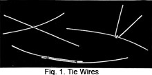There are three different ways to tie wire in making hat frames. Brace wire is placed in such a manner that the ends are parallel and lap one inch. Take a piece of tie wire and bring it around the brace wire once as close to the end of the wire as possible. Hold the wires in the left hand, and with the pliers held in the right hand, grasp the ends of the tie wire as closely to the brace wire as possible and twist tightly until the joining is firm. Then slide the pliers back on the tie wires and make several turns in the wire to be sure that the joining will remain secure. Cut off the ends of the wire, allowing about one-eighth of an inch of the twisted wire to remain. Press this end down close to the brace wire with the jaws of the pliers, and be sure that the joining is made as flat as possible. Tie the other end of the wire in the same manner.
When wires cross at right angles, it is sometimes necessary to tie them. The tie wire is brought across the wires diagonally and tied in exactly the same manner as the parallel wires are tied. This joining, too, must be made as flat as possible. Wires that cross at right angles are sometimes tied without the use of the tie wire. One of the wires is wrapped firmly around the other, and in this manner the tie is made. The brace wires should be on the under side of the brim. For making these ties or twists on a brim it is necessary to allow at least two inches on the brace wire. When the brace wire is in position, crossing the stay in just the proper place, hold these two wires in position with the left hand and give the brace wire one and one-half turns around the stay wire, turning it very close to the other wire. Press this tie flat with the jaws of the pliers, making it firm and smooth.
Various Hat Wires Named
Not only are there various types of hat wires, but there are various names given to hat wires which are used in certain positions. Wires going around the hat, either in crown or brim, are stay wires. Wherever you see the phrase "stay wires" used you will know that it means this. The wires used to keep the stay wires in position, which run from the center of the crown to the edge of the brim, are known as brace wires.
Wires are named also according to the positions they occupy. There is the center front wire, which extends from the top of the crown or from the headsize to the center front. From either of the two points before mentioned to the center back extends what is known as the center back wire. The other wires are named right side, left side, right side front, left side front, right side back and left side back according to their position. These are familiarly known in millinery as the eight points of the hat. The wire at the edge of the hat brim is called the edge wire. The brace wires should always be evenly spaced, as it makes the hat more comfortable and more attractive.
The hat is in two pieces. The wire at the top of the crown is called the crown top and the one at the bottom is called the crown base. The wire which is next to the headsize is called the headsize wire.
The actual making of the wire frame is more largely a matter of mechanical skill than anything else. If you are capable of handling the pliers correctly, of measuring the wires properly, you will have no trouble in making the frame. All that is needed is plenty of practice. Having mastered the method of making wire frames, you will find that it is an easy matter to vary a shape into any style desired. The crown may be made a square crown or a round crown by varying the angle or curve or length of the wire. A brim can be made to roll or droop, or it may be narrow or wide by varying the length and curve of the stay and brace wires.
You may use as many stay wires as you please to make the frame firm and rigid. Unless it is firm and rigid, the frame will not be satisfactory. The finished hat will not retain its shape, and it will not fit comfortably.
Wire Frames
Now we want to learn all the important things about making a wire shape. This wire shape is perhaps the most important branch of millinery because it is the basis for almost all frame work. If you want to learn how to copy models or create your own designs you may reproduce any exclusive model you see by making a neat wire frame. It serves as a block for molding many frames, made of buckram, cape net or similar materials.
The first thing to be considered when making hat frames is the headsize. If this is not correct the hat will not only be uncomfortable but it will be unbecoming as well. Hats and frames are made in sizes which vary each season. Some seasons the hats are worn well down over the head, at other times the mode requires the hat to be worn higher on the head, this style requiring a smaller headsize.
The headsize wire of the crown must be larger than that of the brim in order that the crown may fit down on the brim.
The brim of the frame must be made first, as follows:
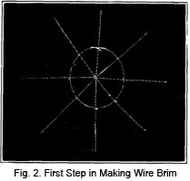1. To find the headsize, take a piece of brace wire and fit it around the head just at the line where the hat is to rest. The hair should be dressed as it is to be when the hat is worn. This headsize wire must have an allowance of one inch on each end for lapping and must be large enough so the tips of two fingers may be pushed beneath it. This is the allowance necessary for lining and materials which must come on the inside of the hat.
2. Join this headsize wire at the center back, using tie wire to secure it as was taught in the earlier part of this lesson.
3. Cut four wires the length of the diameter of the entire hat plus three inches. The three inches is allowed for tying at the edge.
4. Place one of these wires across the headsize wire extending from front to back, using tie wire to tie this wire in place temporarily.
5. Place a second wire across the headsize wire extending from side to side. Secure this with tie wire just as you did the first wire.
6. The other two wires are now to be placed across the headsize half way between the first and second wire and these should be tied lightly to hold them in place, until the permanent tie is made.
7. For flat hat shapes such as the sailor shape we are making the edge wire must be of spring wire. This must be the exact length of the circumference or outer edge of the brim, this will be joined by using a milliners clasp.
8. This joining should come at the center back of the hat, and the edge wire must be placed beneath the stay wires. On a flat shape the stay wires are always placed beneath the brace wires. If the brim turns up the stay wires are on top of the brace wires in order that the side of the brim which shows the most will be as smooth as possible. Measure from the headsize and mark the width of the brim on each brace wire.
9. Beginning at the center back tie the brace wire around the edge wire by turning the end of this wire once and a half around the edge wire. This tie must be made at the mark just made on the stay wire.
10. Be sure that each wire is in its proper place and meets the edge wire at one of the eight points and tie these wires in position just as the center back wire has been tied. Use the pliers to make these joinings flat and firm and trim the brace wires very close to the edge wire making all these joinings just as neat as possible.
11. Your frame is now ready to tie the headsize wire permanently in position. Cut the brace wires where they cross in the center of the headsize, and turn these ends upward at right angles to the wires in the brim, and tie them firmly to the headsize wire in their proper positions by turning the brace wire once and one-half times around the headsize wire bringing the brace wire to an upright position to form the side of the crown or the collar as this is sometimes called. Tie each one removing the temporary tie made with tie wire.
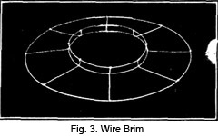12. Make a second headsize wire the exact size of the first one made. Tie this in position above the first one just as you tied the first one to the brace wires. This side crown may be high or low as the style of the hat requires. If a wire crown is to be used on this brim this second headsize wire should be one inch above the first as shown in illustration. If a soft crown is to be used with no wire frame beneath it the second headsize wire may be any distance above the first that is necessary to hold the soft crown in position at the headsize. Usually this is about two or two and a half inches. With the pliers make all ties as flat as possible, trim the ends of the wires closely, and see that the frame looks neat in every detail.
13. If your brim is more than 3 inches wide it will be necessary to make a stay wire and tie it in position at a point one half way between the headsize wire and the edge wire. This wire is tied in position by the use of the tie wire using the diagonal tie.
14. After the brim is finished, pull it gently from center front to center back in order to shape the headsize so that it will be about one inch longer from front to back than it is from side to side.
When the crown is made it is shaped in the same way so that the two will go together easily and the hat be made comfortable for the wearer. This finishes the brim. The next step in making the frame is to make the crown.
Making the Crown
When measuring for the headsize wire for the crown we must remember to make this large enough so the crown will set down over the collar or crown of the brim. So allow this wire a little longer than the headsize wire for the brim.
1. Measure for this length and tie the headsize wire exactly as you did when the brim was started.
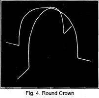2. The next step is to determine the length of the wires which form the crown. The length of these wires determines the height of the crown. If these wires are long, the crown will be high, if short the crown will be low. The worker must use her own judgment in determining the length of these wires. The curves made in these wires determine the shape of the crown. For instance, a round crown has a gentle curve from the top of the crown to the headsize wire, while a square crown is straight from the headsize wire to the crown top wire and is flat on top. We will first consider the round crown. Determine the length of your wires from center of the back to center of the front of the headsize wire and allow two inches at each end for work. Cut this wire, and three others exactly like it. Bend these wires as shown in Fig. 4. The sharp bend is exactly two inches from the ends of the wire if you have been exact in allowing two inches for work.
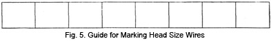3. Prepare a strip of paper the length of the headsize and divide it in eight equal sections as shown in Fig. 5. Cut one of these sections from the strip and using it as a guide mark your headsize wire in sections this length. This establishes the eight points of the crown. Take one of the brace wires just prepared and tie it to the headsize wire at center front and center back. Remember that the joining of your headsize wire must be at the center back. Now tie the side wire in position. The other two wires will be tied in the same way in their proper places. Tie these wires to the headsize wire by wrapping the brace wire one and one-half times around the headsize wire.
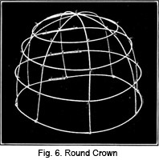4. The crown on a hat is very much more comfortable if it is a little longer from front to back than from side to side, so take the crown and gently pull it from end to end in order to shape it in this way. It should measure about one inch longer from front to back than from side to side. When the mode requires large crowns, hats very often look better if the crown is a little smaller at the top than at the bottom, that is, that the curve or slant of the wires begins exactly at the headsize. In this case the second stay wire will be made a little smaller than the headsize wire. This wire is prepared just as the headsize wire was prepared and tied in position two inches above it. Use tie wire and the diagonal tie. A second wire is prepared as the headsize wire was prepared and tied to the brace wires about two inches above the first wire. A small circle of wire is tied to the brace wires about an inch and a half or two inches from the center of the crown. These stay wires should be about equal distance apart when the crown is finished, although the wires at the top of the crown may be closer together than the ones at the side. A great deal will depend on the size of your crown in regulating the position of these wires. This finishes the round crown.
The Square Crown
The wires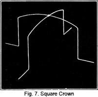 for a square crown are prepared in exactly the same way as the wires for a round crown except they are bent in a different shape. They are bent into shape in the following manner.
1. Cut the wires the proper length, allowing for work. Find the center of the brace wire, and at a point where the crown top wire is to come, make a sharp downward turn forming a right angle. This must be repeated on the other half of the wire.
2. At the point where the headsize wire is to be applied turn the wires outward just as in the round crown. Bend the other three brace wires in exactly the same way.
3. Tie these brace wires to the headsize wire in the same way as in the round crown. Mark on the headsize wire the eight points in order to bring these wires exactly in their proper position.
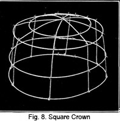4. Shape your headsize by gently pulling it from front to back to make it about one inch longer than it is from side to side.
5. Prepare the crown top wire and tie this in position just at the bend at the top of the crown. These stay wires are on the outside of the brace wires and are tied in position with tie wire, making a diagonal tie.
Another stay wire will be needed between the headsize wire and the crown top wire. This may be the exact size of the headsize wire or it may be a little smaller. Usually this wire as well as the crown top wire is a trifle smaller than the headsize wire. A stay wire must be placed between the crown top wire and the center of the crown, and must be tied in position just as the other stay wires have been tied. Always remember that stay wires extend around the hat and they must be tied in a circle before being applied to the crown or brim.
Mushroom Shape
The mushroom shape with its softly falling brim can be made in the same manner as the sailor frame. The only difference is that the brace wires are bent down instead of being at right angles to the headsize wire. Care must be taken that it isn't bent too far, because it can be very unbecoming if not correctly shaped. This mushroom shape may have the brace wires measure the same length all the way around or they may be shorter in the back and longer on the sides. The edge wire is fastened to the brace wires the same as in the sailor shape. These wires should be twisted around the edge wire and cut off. The edge wire is put on in the same way, and be sure that all joinings overlap at least one inch.
You must know the names of the wires in a hat and know the position of these wires. When measures are given for a wire frame these wires are indicated by their initials, for example, F indicates "Front," L. S. F. indicates "Left Side Front," B indicates "Back" and so on. The measures for the frame you are to make are as follows:
FOR THE BRIM |
|||||
| F. | 3 3/4" | B. | 2 1/4" | ||
| L. S. F. | 3 1/2" | R. S. B. | 2 3/4" | ||
| L. S. | 2 3/4" | R. S. | 3" | ||
| L. S. B. | 2 3/4" | R. S. F. | 3" | ||
| H. S. | 24" | ||||
| E. W. | 34" | ||||
1. These are all the measures necessary for the frame. Cut the stay wires for the brim the length of the diameter of the headsize plus the width of brim plus two inches on each end. For a hat made from the above measures the wire from front to back should measure three and three-quarters inches plus two and one-quarter inches plus eight plus two plus two equals eighteen inches. The diameter of the headsize may be estimated as one-third of the headsize measure. The other wires will be measured and cut in the same length as the longest one necessary. When estimating the length of these wires be sure you use the longest measures and add the two inches at each end for tying. Having found the exact lengths of the wires proceed to cut them. There will be four wires.
2. Cut the headsize wires.
3. Join the headsize wires, using tie wire to secure the ends. Remember, the joining of the headsize wires should come in the center back.
4. Place one of the brace wires across the headsize wire extending from front to back. Use tie wire to tie this temporarily in position.
5. Place another brace wire across the headsize extending from side to side. Secure this wire as you did the first.
6. Place the other two wires across the headsize so they meet the headsize wire midway between the wires first fixed in position. Tie these wires in place just as you did the first two wires.
7. From the headsize wire on the center front and center back wire, measure and mark the width of the brim at center front and back.
8. On the wire at left and right side measure the width of the brim from the headsize wire, marking this as you did at center front and back. On the wires midway between center front and right side mark the width of the brim at right side front. On each of the unmarked wires measure the width of the brim at these points and mark in the same way.
9. Prepare an edge wire, tying it as you have been taught. This edge wire is now placed on the brace wires at exactly the points you have marked.
10. Tie this wire in place, by turning the ends of the stay wires around the edge wire, one and one-half times as previously taught. Remember that this wire determines the roll of the brim on your turban. If you want the brim to roll closely to the crown of the turban this wire will be made short enough to bring this close to the crown. If on the other hand you want the brim to be more like the bowl brim, this wire will be longer. The stay wires of course will be bent in a gentle curve from the headsize wire to the edge wire so the hat will turn up away from the face.
11. Midway between the headsize wire and the edge wire another stay wire will be tied. Prepare the stay wire, using tie wire to join the ends and also to tie it in position.
12. Now cut the wires where they cross at the center of the headsize. Remove the tie wire which tied the headsize wire into position temporarily and tie this wire in position with the ends of the wires, wrapping these around the headsize wire one and one-half times. When removing these temporary tie wires, remove one and tie the headsize wire in place permanently before the next temporary tie wire is removed.
13. Tie the second headsize wire to these brace wires which have been turned at right angles to the first headsize wire. This second headsize wire may be high or low, but for this hat should not be more than three-quarters of an inch above the first wire. This forms the collar over which the crown will be fitted.
14. Trim the ends of the wire at the edge of the crown, making as smooth a finish at the edge as possible. Do the same at the headsize and your brim is finished.
Remember that the shape of your hat depends entirely on the length of the wires and on the curves made in these wires. Make all ties as flat as possible and remember where to use the different ties. You will then have gone a long ways toward successful frame making. Be sure you know these things before you leave this lesson. Practice and experience are the only things that can help you in this work.
When brims are to be shaped number 21 brace wire or even a heavier wire should be used for the edge wire. Spring wire cannot be bent into shape nor can it be readily bent out of shape. This is the reason for using it on flat sailor shapes.
After the Wire Frame Is Made
Having studied the construction of wire frames, and being able now to make wire frames in a variety of attractive styles, let us now see how these frames are covered. The wire frame is the foundation, the groundwork of the hat; but it is the covering and the trimming that determine the final attractiveness and charm of the finished hat.
There are many various types of material for which wire frames are used. Transparent hats—hats made of lace, georgette crepe and net are built on a foundation of wire. Hats of straw, lace braids or horsehair are also made on wire frames. If the materials used are not transparent, the wire shape is first covered with light-weight crinoline. But if the braid or material used is transparent, the wire shape is covered with mull that matches the material used. This crinoline or mull cover is ordinarily used OK the outside of the crown and on the under side of the brim.
Though there are many different kinds of materials, the methods of applying to the wire frame are very similar. The wires divide the hat into eight equal sections which are known to millinery as the eight points of the hat. Remember this. It is an important feature of millinery design which is taught later. In the meanwhile remember that the hat has eight points, and that the wires of the frame mark these points.
Usually the first part of the wire frame to be covered is the brim. If you follow these step-by-step directions carefully you will find that it's really quite a simple matter.
1. Take up your wire brim and lay it on the material with the straight lengthwise grain of the material running straight from the center front to the center back of the hat. Pin firmly to the frame at these points.
2. Extend the straight crosswise of the material from the right side of the brim to the left side and pin at these points also.
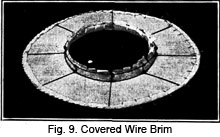3. Proceed to pin the material to the other four points, removing carefully any fullness that may be at these bias points. Be careful not to pull the material in any way to distort the shape of the frame. This is a mistake frequently made by beginners. Be sure that throughout your work the original shape of the frame is retained.
4. You are now ready to cut around the frame. Allow three- quarters of an inch to turn over the edge of the wire.
5. After turning over the edge of the wire, proceed to overcast as illustrated.
6. 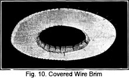Cut around the headsize, allowing once again three- quarters of an inch, this time to slash and turn over the headsize wire.
7. Turn the edge over the headsize wire and oversew as indicated in the illustrations.
The brim is now covered. You see it is not so difficult after all! And as you proceed, you will find that the beautiful hat that seemed such a mystery to you is really quite a simple thing to make providing you follow the steps carefully.
Other Wire Shapes
If you can cover the sailor brim you can make all the different hat shapes. The brim may be turned up or down, made wide on one side or any shape you desire. The way of starting is exactly the same. I am sure that you are going to enjoy making all the different kinds of wire frames. You can use so much of your own individuality, and make shapes which it is not possible to buy.
Covering the Frame to Be Used as a Mold
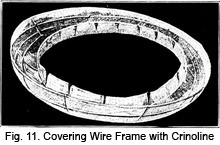No doubt you would like to learn how to make a frame all in one piece with but one seam. You know the frames you purchase at the store are made in this way—in fact, some of them have no seam at all. First, the wire frame which has been made the shape you desire should be covered with crinoline. In this way the imprints of the wire will not show on the molded frame. Begin on the under part of the frame starting at the center front. Take a corner of the crinoline and pin it to the center front of the brim. Pin to the headsize as well as to the edge of the brim. In order to make the crinoline easier to handle and to make it stretch easier, steam it slightly. This will make it easier to stretch and will make it fit closely over all parts of the brim. This covering of crinoline must be perfectly smooth over all the frame. Be very careful not to bend the edge wire out of shape. (Fig. 11.)
After all this has been accomplished, cut the crinoline to within one-half inch from the edge of the brim. Turn over wire and stitch close to the edge with stab stitch. The crinoline may be slashed at intervals if necessary in order to make a real neat turning. Next, cut material at least one and one-half inches from the headsize and sew it over the headsize wire. It will be necessary to make little slashes in order to make them turn over the headsize wire.
Molding Material Over Wire
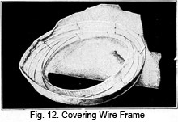It is very hard for a beginner to make a perfect wire frame on which to mold a shape. However, practice makes perfect, and it is only after continual practice that this may be accomplished. Place the buckram on the table and moisten it with a damp cloth. Care must be taken that it isn't too wet. Begin as you did when covering the frame with crinoline, that is, start with a corner and place the rough side of the buckram next to the frame and pin it to the center front at the edge of the brim, then pin it to the headsize the same as you did when covering it with crinoline. Fig. 12 will show you how the material is turned. Willow plate may be used instead of buckram if desired.
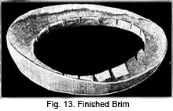Allow the material to dry thoroughly then carefully mark the place where the seam is to be, allowing the usual one-half inch for overlapping. Remove from wire frame carefully. The edge is then trimmed along the fold and the edge is wired and bound. This is done by cutting a piece of crinoline about 1 1/2 inches wide. This is folded through the center, then pinned to the center back of the frame. Carefully stretch the crinoline, being sure the shape is not injured. Sew all around the brim using the stab stitch. No fullness should be allowed at the edge, for this may be removed by stretching. Fig. 12 will show the method-of applying buckram and Fig. 13 shows buckram frame when it has been dried and removed from wire.
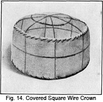Covering the Crown
Perhaps the crown is a trifle more difficult to cover than the brim. Certainly it requires more care and more attention. Remember that neatness is the final test of good workmanship—and that without neatness your hat can have no charm, no beauty.
1. To cover the crown, first cut a circular piece of the material being used, making it as large as the top of the crown. Allow three-quarters of an inch to extend over the edge of the top.
2. Proceed to pin it in precisely the same manner that the brim covering was pinned. The straight lengthwise grain of the material should run from front to back; the crosswise grain from side to side. The fullness at the edge should be laid in even plaits. However, if this is so heavy that it will make an uneven edge, cut some of the crinoline beneath the plaits away and lap the flat edges.
3. Now cut a piece of the covering material long enough to go around the side crown and to overlap one inch. Cut it one inch wider than the side crown is high.
4. Now turn one-half inch under along the upper edge and pin in place.
5. Beginning at the center back, pin the turned edge even with the outer wire of the crown top.
6. Sew this edge to the crown top with long stitches on the outside.
7. Turn the edge over the headsize wire at the headsize, pin in place and oversew.
The method of crown covering just taught applies to the square crown. When the hat is of a less regular shape, it is better to cover the frame with mull which is very much more pliant than crinoline. If the crown is round, the mull cover may be in one piece. You will have no trouble in covering this type of crown if you follow these steps.
1. Beginning at the center front and center back, divide the crown at the headsize into eight equal sections.
2. Cut the circle of the mull large enough to cover the crown and allow three-quarters of an inch to turn over the edge at the head- size. Crease exactly in the center by folding in half on the lengthwise and then in quarters on the crosswise grain.
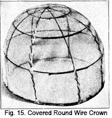3. Proceed to pin the straight lengthwise fold of the material, at the center front and center back; and pin the straight crosswise fold at the sides at the headsize.
4. Now pin the point halfway between the center front and sides to the corresponding point on the frame.
5. Between these points there will be a slight fullness which should be laid in small even plaits. Or it may be eliminated by cutting out small gores and lapping the raw edges. If the mull is very thin, it will fray badly; but if the mull is heavy enough this latter method is the best as it gives a flat, smooth finish.
6. Having pinned the covering all around the headsize, turn the edge to the inside of the crown and overcast just as in the sailor shape.
7. Perhaps the brim is turned up as in a turban. In this case, the covering is put on the under side and is applied in the same way as the covering of the sailor brim. Fullness at any part is taken out in the same way as it is taken from the crown. On the other hand, if there is not enough fullness, add gussets in their proper places. The frame is now ready for the braid. You see, you have only been preparing your frame for the braid covering—and now you have reached that important point.
The methods just given for covering the crown will help you a great deal if you are planning on making a hat and covering it with braid. Of course, some seasons the wire crown is not in style and then we must hunt for other methods. I feel that it is necessary that you should know all the different secrets of millinery whether they are being used today or not, for no one knows just when styles that were used several years ago will be the present-day mode.
The making or molding of shapes over wire is very interesting work because there are so many possibilities. Of course, the whole secret of the matter is in the making of a good firm frame that will withstand the handling. In order to obtain this kind of frame it is necessary to practice with wire and pliers to make sure that the wires are tied carefully and will stay in place.
It is possible to make a good wire frame, cover it with crinoline so that the imprint of the wire cannot be noticed, for any type of hat given in the previous lessons or any variation of the types which you will see in the stores. To be sure, it takes practice to make these molds and it takes practice to cover them carefully so that the shape you are making is smooth and looks like the shapes purchased at the store.
Suppose you are not making the wire frame to be used as a mold, but instead wish to make a transparent hat, which requires the wire for the foundation. Here again it will be necessary to follow directions very carefully to see that it is made exactly right. Each wire must be in the right place and must be firmly tied so that it will stay.
The wire frame is of course much more perishable than the buckram frame, which we will take up in the next lesson. It perhaps requires more patience to make this frame, but at the same time it is a part of our millinery work and it must be mastered in order to learn how to make all of the many kinds of hats worn today.
No doubt you have seen the pretty dress hats that are made of a wire frame and are covered with gold or silver lace. They are very popular and most appropriate for many occasions. These hats would lose all of their charm if they were made on a buckram frame, so you see the wire frame plays a very important part, not only as a foundation for a hat of this type, but also as a foundation for molding buckram frames.
It is possible to make a wire mold over which crowns may be molded, but it is rather difficult to make unless one is very much skilled in the bending of wires. In the next lesson on the making of buckram shapes I am going to tell you how a crown may be molded over a wooden hat block or a wire reinforced buckram crown.
Before leaving this lesson on the covering of wire frames, be sure that you have mastered each detail thoroughly. Have a little review. Go over each part of the lesson. Test yourself. See if there is anything you are in doubt of, anything you would like to have explained.
 LESSONS 4 AND 5
LESSONS 4 AND 5

QUESTIONS
1. Name the eight types of millinery shapes.
2. What is the heaviest millinery wire called?
3. What wire is used at the edge of a hat having a straight brim?
4. What is ribbon wire?
5. How should wire be straightened?
6. How do you find the headsize?
7. On the headsize wire how much should be allowed for overlapping?
8. Where is the brace wire used?
9. Where are the stay wires used?
10. A crown is much more comfortable if it is longer from front to back than from side to side. How is this obtained?